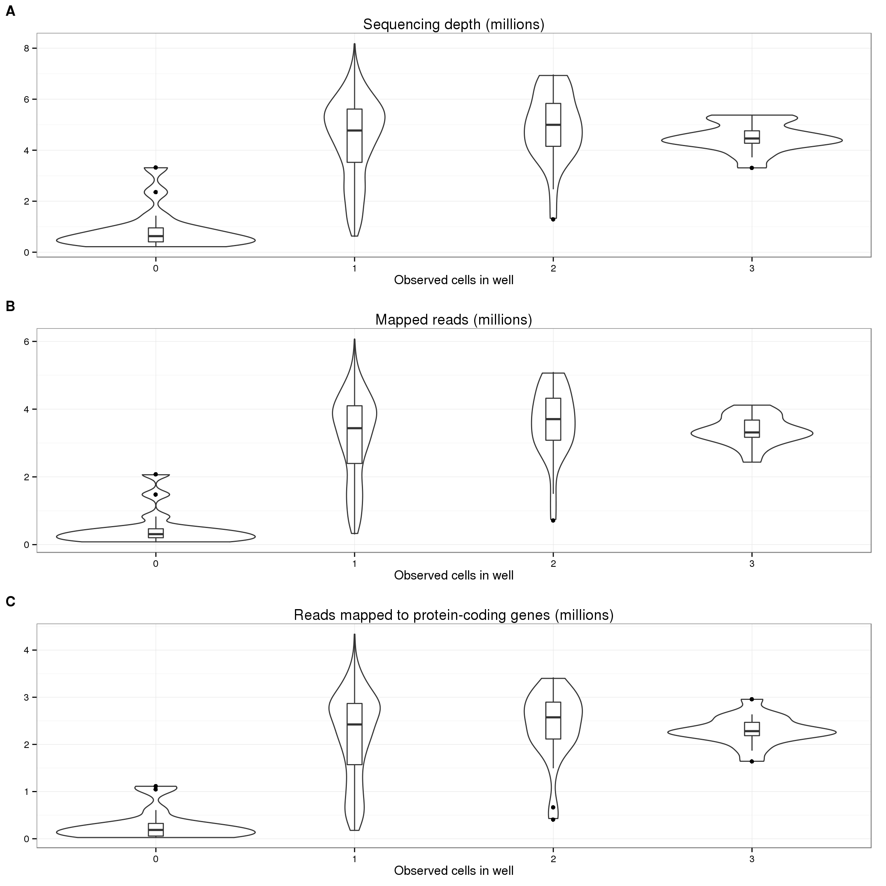
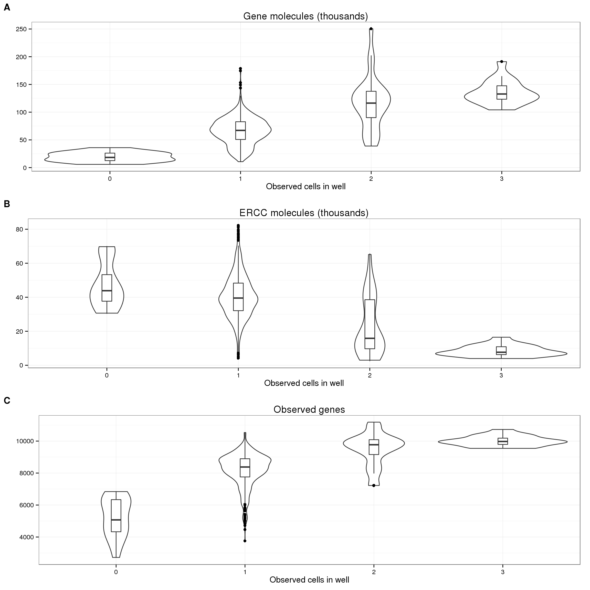
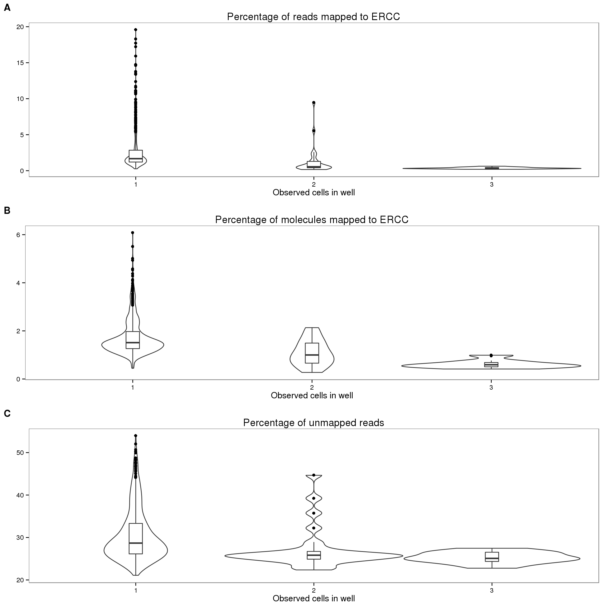
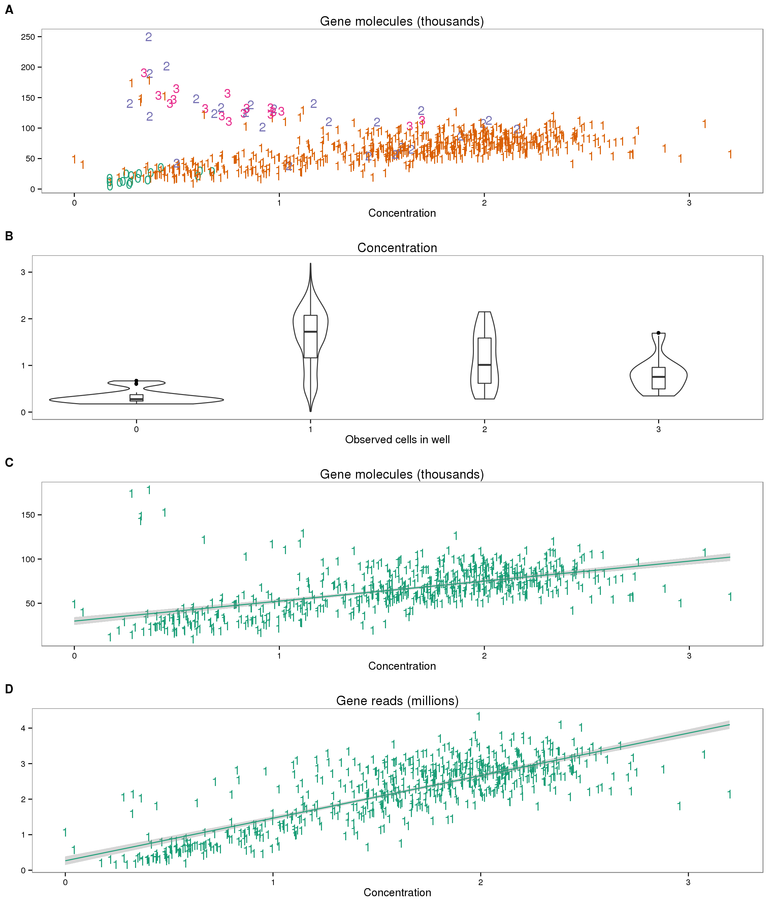
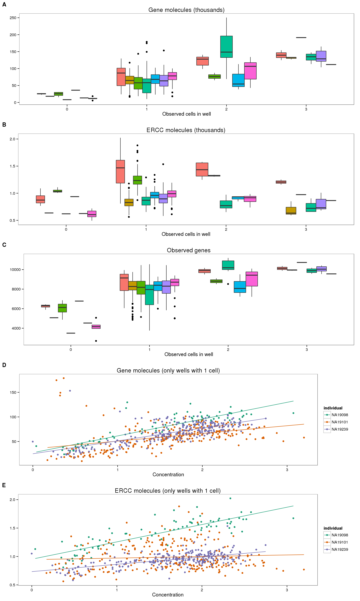
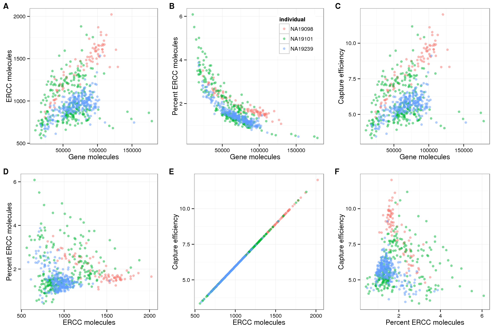
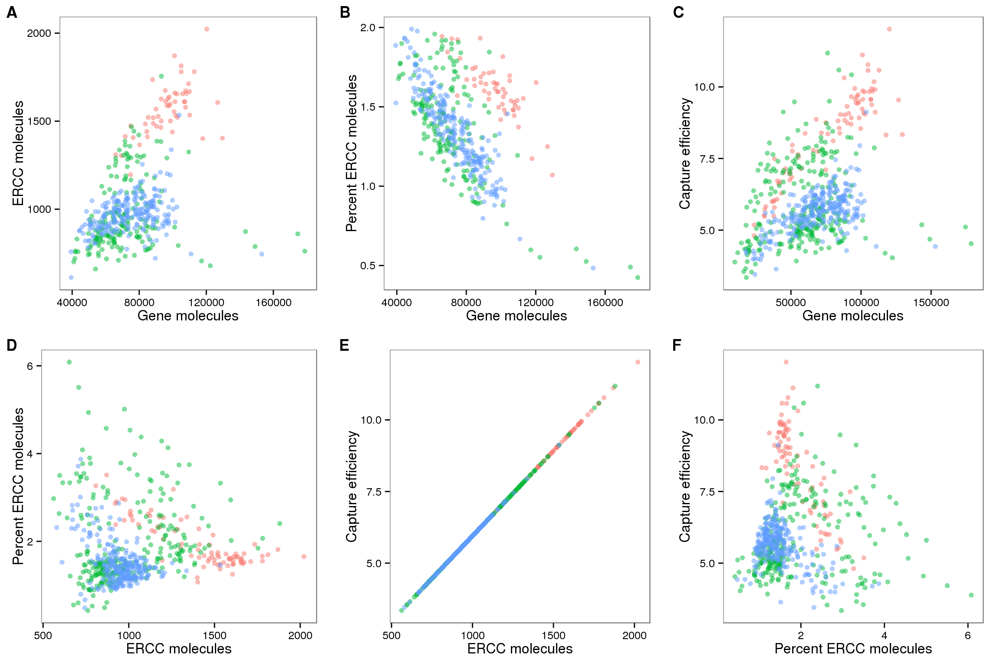

Last updated: 2016-02-04
Code version: 6f8d2ea409e938758e55653ca6ec1a6ffb7f3102
Recreate the Sequencing depth and cellular RNA content using updated data files to make figures for the paper.
library("dplyr")
library("tidyr")
library("edgeR")
library("ggplot2")
library("cowplot")
theme_set(theme_bw(base_size = 12))
source("functions.R")Input annotation
anno_single <- read.table("../data/annotation.txt", header = TRUE,
stringsAsFactors = FALSE)
head(anno_single) individual replicate well batch sample_id
1 NA19098 r1 A01 NA19098.r1 NA19098.r1.A01
2 NA19098 r1 A02 NA19098.r1 NA19098.r1.A02
3 NA19098 r1 A03 NA19098.r1 NA19098.r1.A03
4 NA19098 r1 A04 NA19098.r1 NA19098.r1.A04
5 NA19098 r1 A05 NA19098.r1 NA19098.r1.A05
6 NA19098 r1 A06 NA19098.r1 NA19098.r1.A06Input read counts.
reads <- read.table("../data/reads.txt", header = TRUE,
stringsAsFactors = FALSE)
stopifnot(colnames(reads) == anno_single$sample_id)
ercc_index <- grepl("ERCC", rownames(reads))
anno_single$total_reads_gene = colSums(reads[!ercc_index, ])
anno_single$total_reads_ercc = colSums(reads[ercc_index, ])
anno_single$total_reads = colSums(reads)Input molecule counts
molecules <- read.table("../data/molecules.txt", header = TRUE,
stringsAsFactors = FALSE)
stopifnot(colnames(molecules) == anno_single$sample_id,
rownames(molecules) == rownames(reads))
anno_single$total_molecules_gene = colSums(molecules[!ercc_index, ])
anno_single$total_molecules_ercc = colSums(molecules[ercc_index, ])
anno_single$total_molecules = colSums(molecules)Input summary counts
summary_counts <- read.table("../data/summary-counts.txt", header = TRUE,
stringsAsFactors = FALSE)
summary_per_sample <- as.data.frame(summary_counts)Calculate the total number of mapped reads, unmapped reads, and sequencing depth (mapped + unmapped reads).
colnames(summary_per_sample) [1] "individual" "replicate"
[3] "well" "rmdup"
[5] "Assigned" "Unassigned_Ambiguity"
[7] "Unassigned_MultiMapping" "Unassigned_NoFeatures"
[9] "Unassigned_Unmapped" "Unassigned_MappingQuality"
[11] "Unassigned_FragmentLength" "Unassigned_Chimera"
[13] "Unassigned_Secondary" "Unassigned_Nonjunction"
[15] "Unassigned_Duplicate" summary_per_sample <- summary_per_sample %>%
mutate(total_mapped = Assigned + Unassigned_Ambiguity + Unassigned_NoFeatures,
total_unmapped = Unassigned_Unmapped,
depth = total_mapped + total_unmapped)
anno_single$total_mapped <- summary_per_sample[summary_per_sample$rmdup == "reads",
"total_mapped"]
anno_single$total_unmapped <- summary_per_sample[summary_per_sample$rmdup == "reads",
"total_unmapped"]
anno_single$depth <- summary_per_sample[summary_per_sample$rmdup == "reads",
"depth"]Input single cell observational quality control data.
qc <- read.table("../data/qc-ipsc.txt", header = TRUE,
stringsAsFactors = FALSE)
qc <- qc %>% arrange(individual, replicate, well)
stopifnot(qc$individual == anno_single$individual,
qc$replicate == anno_single$replicate,
qc$well == anno_single$well)
head(qc) individual replicate well cell_number concentration tra1.60
1 NA19098 r1 A01 1 1.734785 1
2 NA19098 r1 A02 1 1.723038 1
3 NA19098 r1 A03 1 1.512786 1
4 NA19098 r1 A04 1 1.347492 1
5 NA19098 r1 A05 1 2.313047 1
6 NA19098 r1 A06 1 2.056803 1Incorporate informatin on cell number, concentration, and TRA1-60 status.
anno_single$cell_number <- qc$cell_number
anno_single$concentration <- qc$concentration
anno_single$tra1.60 <- qc$tra1.60Calculate percentage of ERCC reads (out of all reads assigned to a feature), ERCC molecules, and unmapped reads.
anno_single <- anno_single %>%
mutate(perc_ercc_reads = total_reads_ercc / total_reads * 100,
perc_ercc_molecules = total_molecules_ercc / total_molecules * 100,
perc_unmapped = total_unmapped / depth * 100)
anno_single$num_genes = apply(reads[!ercc_index, ], 2, function(x) sum(x > 0))Calculate capture efficiency, here defined as the percentage of input ERCC molecules that were observed.
spike <- read.table("../data/expected-ercc-molecules.txt", header = TRUE,
sep = "\t", stringsAsFactors = FALSE)Only keep the spike-ins that were observed in at least one cell.
spike_input <- spike$ercc_molecules_well[spike$id %in% rownames(molecules)]
names(spike_input) <- spike$id[spike$id %in% rownames(molecules)]
spike_input <- spike_input[order(names(spike_input))]
stopifnot(rownames(molecules)[ercc_index] == names(spike_input))This data set has not been subjected to the expression level filter, thus it includes 69 ERCC spike-ins.
efficiency_vec <- numeric(length = ncol(molecules))
total_ercc_molecules <- sum(spike$ercc_molecules_well)
for (i in 1:ncol(molecules)) {
efficiency_vec[i] <- sum(molecules[ercc_index, i]) / total_ercc_molecules * 100
}
anno_single$efficiency <- efficiency_vec
summary(efficiency_vec) Min. 1st Qu. Median Mean 3rd Qu. Max.
2.929 5.276 6.075 9.906 7.834 55.280 As we try to understand the general relationships between sequencing results and cellular mRNA content, we remove outlier batches. The quantification of the concentration of the single cells in replicate 1 of NA19098 failed. The number of ERCC molecules in replicate 2 of NA19098 are abnormally high.
anno_single <- anno_single %>% filter(batch != "NA19098.r1",
batch != "NA19098.r2")Because we mix an equal volume from each well, we could potentially infer the relative amount of cellular mRNA content based on the number of sequences coming from a given well. Furthermore, since the same amount of ERCC spike-ins are added to each well, we do not expect to see a difference in the number of ERCC sequences across wells. The Fluidigm C1 chip provides the number of cells in each well. Thus we can use this information as an indepdent measurement of cellular mRNA content. We will compare it to the following metrics:
| Abbr | Explanation |
|---|---|
| depth | Number of reads sequenced (i.e. sequencing depth) |
| total_mapped | Number of mapped reads |
| total_unmapped | Number of unmapped reads |
| total_reads_gene | Number of reads mapped to protein-coding genes |
| total_reads_ercc | Number of reads mapped to ERCC spike-ins |
| total_molecules_gene | Number of molecules mapped to protein-coding genes |
| total_molecules_ercc | Number of molecules mapped to ERCC spike-ins |
| num_genes | Number of genes with at least one read observed |
| perc_ercc_reads | Percent of reads that map to ERCC spike-ins (out of reads assigned to a feature) |
| perc_ercc_molecules | Percent of molecules that map to ERCC spike-ins (out of reads assigned to a feature) |
| efficiency | Percent of input ERCC molecules that were observed |
| perc_unampped | Percent of unmapped reads |
Because there were so few wells that contained 4 or 5 cells, we remove these first.
table(anno_single$cell_number)
0 1 2 3 4 5
17 606 26 17 1 5 anno_single <- anno_single %>% filter(cell_number <= 3)Using data from sequencing reads, i.e. not utitlizing UMI information, we observe no correlation between the number of sequences and the number of cells in a well.
plot_cell_depth <- ggplot(anno_single, aes(x = as.factor(cell_number), y = depth / 10^6)) +
geom_violin(width = 1) +
geom_boxplot(width = .1, position = position_dodge(width = .9)) +
labs(x = "Observed cells in well", y = "",
title = "Sequencing depth (millions)")
boxplot_base <- plot_cell_depth
plot_cell_mapped <- boxplot_base %+% aes(y = total_mapped / 10^6) +
labs(y = "", title = "Mapped reads (millions)")
plot_cell_total_reads <- boxplot_base %+% aes(y = total_reads_gene / 10^6) +
labs(y = "", title = "Reads mapped to protein-coding genes (millions)")
plot_grid(plot_cell_depth, plot_cell_mapped, plot_cell_total_reads,
labels = LETTERS[1:3], nrow = 3)
On the other hand, utilizing the UMIs, we do see a correlation with the number of molecules per well with the number of cells per well (panel A below). Crucially, in accoradance with our expecations, this trend is not present in the ERCC molecules (panel B). In fact, we observe the opposite trend, which makes sense since the ERCC spike-in molecules are a smaller percentage of the total molecules in wells with more than one cell. Furthermore, the increasing trend is also observed with the number of observed genes (panel C).
plot_cell_mol_gene <- boxplot_base %+% aes(y = total_molecules_gene / 10^3) +
labs(y = "", title = "Gene molecules (thousands)")
plot_cell_mol_ercc <- boxplot_base %+% aes(y = total_reads_ercc / 10^3) +
labs(y = "", title = "ERCC molecules (thousands)")
plot_cell_num_genes <- boxplot_base %+% aes(y = num_genes) +
labs(y = "", title = "Observed genes")
plot_grid(plot_cell_mol_gene, plot_cell_mol_ercc, plot_cell_num_genes,
labels = LETTERS[1:3], nrow = 3)
Because of the observed increase in the number of gene molecules and decrease in number of ERCC molecules with increasing cell number, it is reasonable to expect that the percentage of ERCC molecules is a proxy for cellular mRNA content. We do observe this expected trend with the ERCC molecules (panel B below), and to a lesser extent with the ERCC reads (panel A). Since the ERCC percentage is also used as a quality control measure, we wanted to confirm that the observed trend was not simply due to quality issues. The percentage of unmapped reads, another quality measure, does decrease from one cell to two cells, but does not change much from 2 cells to 3 cells (panel C). Since the wells with zero cells have much higher percent ERCC and percent unmapped (because they are bad quality), we removed them from the plots below to better observe the relationship with cell number.
plot_cell_perc_ercc_reads <- boxplot_base %+% aes(y = perc_ercc_reads) %+%
anno_single[anno_single$cell_number != 0, ] +
labs(y = "", title = "Percentage of reads mapped to ERCC")
plot_cell_perc_ercc_mol <- boxplot_base %+% aes(y = perc_ercc_molecules) %+%
anno_single[anno_single$cell_number != 0, ] +
labs(y = "", title = "Percentage of molecules mapped to ERCC")
plot_cell_perc_unmapped <- boxplot_base %+% aes(y = perc_unmapped) %+%
anno_single[anno_single$cell_number != 0, ] +
labs(y = "", title = "Percentage of unmapped reads")
plot_grid(plot_cell_perc_ercc_reads, plot_cell_perc_ercc_mol, plot_cell_perc_unmapped,
labels = LETTERS[1:3], nrow = 3)
Now for the confusing part. We also have the concentration of each well after it was amplified in the C1 chip, but before undergoing library prepration. If this is an accurate measurement, we expect concentration to increase with the number of cells and also correlate with the total number of gene molecules. We do observe the latter (panel A below), but not the former (panel B). More specifically, for wells that contain one cell, we observe an increase in the number of gene molecules with an increase in concentration (panel C). However, the concentration decreases with increasing number of cells per well (panel B). We also observe a correlation with the number of gene reads and the concentration (panel D). Thus the post-amplification concentration influences the amount of gene reads that are ultimately sequenced, but this concentration does not necessarily correspond to the original amount of mRNA in the cell.
plot_conc_molecules_gene <- ggplot(anno_single, aes(x = concentration, y = total_molecules_gene / 10^3,
color = as.factor(cell_number))) +
geom_text(aes(label = cell_number)) +
labs(x = "Concentration", y = "", title = "Gene molecules (thousands)") +
scale_color_brewer(palette = "Dark2") +
theme(legend.position = "none")
plot_cell_concentration <- boxplot_base %+% aes(y = concentration) +
labs(y = "", title = "Concentration")
plot_conc_molecules_gene_1cell <- plot_conc_molecules_gene %+%
anno_single[anno_single$cell_number == 1, ] +
geom_smooth(method = "lm")
plot_conc_reads_gene_1cell <- plot_conc_molecules_gene_1cell %+%
aes(y = total_reads_gene / 10^6) +
labs(y = "", title = "Gene reads (millions)")
theme_set(theme_bw(base_size = 12))
plot_grid(plot_conc_molecules_gene, plot_cell_concentration,
plot_conc_molecules_gene_1cell, plot_conc_reads_gene_1cell,
labels = LETTERS[1:4], nrow = 4)
Further complicating the interpretation is the variability both within and between batches. While there are clear differences in the mean of the distributions of many of these metrics across wells with differing cell numbers, the variability is really high. Do we expect that some single cells will have the same celluar mRNA content as a well with 2-3 cells? Do we expect the cellular mRNA content from a single cell to vary this much? For wells with a single cell observed, the first quartile for the total number of gene molecules is 50731.25, and the third quartile is 82736. (Note: I purposely avoided using the minimum and maximum here since the minimum value is likely from one dead cell, and the maximum is potentially from a well with multiple cells).
The variability between batches are even more difficult to interpret. Strangley, the three individuals are consistently different across their three replicates, suggesting these differences come from the actual cells and not the single cell processing.
plot_conc_molecules_gene_batch <- ggplot(anno_single[anno_single$cell_number == 1, ],
aes(x = concentration, y = total_molecules_gene / 10^3,
color = individual)) +
geom_point() +
geom_smooth(method = "lm", se = FALSE) +
labs(x = "Concentration", y = "", title = "Gene molecules (only wells with 1 cell)") +
scale_color_brewer(palette = "Dark2")
plot_conc_molecules_ercc_batch <- plot_conc_molecules_gene_batch %+%
aes(y = total_molecules_ercc / 10^3) +
labs(y = "", title = "ERCC molecules (only wells with 1 cell)")
boxplot_no_violin <- ggplot(anno_single, aes(x = as.factor(cell_number), fill = batch)) +
geom_boxplot() +
labs(x = "Observed cells in well") +
theme(legend.position = "none")
plot_grid(boxplot_no_violin %+% aes(y = total_molecules_gene / 10^3) +
labs(y = "", title = "Gene molecules (thousands)"),
boxplot_no_violin %+% aes(y = total_molecules_ercc / 10^3) +
labs(y = "", title = "ERCC molecules (thousands)"),
boxplot_no_violin %+% aes(y = num_genes) +
labs(y = "", title = "Observed genes"),
plot_conc_molecules_gene_batch,
plot_conc_molecules_ercc_batch,
labels = LETTERS[1:5], nrow = 5)
The ERCC spike-ins have multiple purposes:
But how well can they be used for these three purposes? The plots below display the mutliple ERCC metrics for wells that contained only one cell.
# Compare ERCC metrics to total gene molecules
plot_gene_mol_ercc_mol <- ggplot(anno_single[anno_single$cell_number == 1, ],
aes(x = total_molecules_gene,
y = total_molecules_ercc)) +
geom_point(aes(color = individual), alpha = 0.5) +
labs(x = "Gene molecules", y = "ERCC molecules") +
theme(legend.position = "none")
plot_gene_mol_perc_ercc <- plot_gene_mol_ercc_mol %+%
aes(y = perc_ercc_molecules)+
labs(y = "Percent ERCC molecules")
plot_gene_mol_efficiency <- plot_gene_mol_ercc_mol %+%
aes(y = efficiency) +
labs(y = "Capture efficiency")
# Compare between ERCC metrics
plot_ercc_mol_perc_ercc <- plot_gene_mol_perc_ercc %+%
aes(x = total_molecules_ercc) +
labs(x = "ERCC molecules")
plot_ercc_mol_efficiency <- plot_gene_mol_efficiency %+%
aes(x = total_molecules_ercc) +
labs(x = "ERCC molecules") +
theme(legend.position = "none")
plot_perc_ercc_efficiency <- plot_ercc_mol_efficiency %+%
aes(x = perc_ercc_molecules) +
labs(x = "Percent ERCC molecules") +
theme(legend.position = "none")
plot_grid(plot_gene_mol_ercc_mol,
plot_gene_mol_perc_ercc + theme(legend.position = c(.8,.8)),
plot_gene_mol_efficiency,
plot_ercc_mol_perc_ercc,
plot_ercc_mol_efficiency,
plot_perc_ercc_efficiency,
labels = LETTERS[1:6])
For the purpose of quality control, it is difficult to oberve a clear distinction between high and low quality cells using the percent ERCC molecules, as the percentage ERCC molecules continuously decreases with increasing gene molecules (panel B above).
For the purpose of measuing cell-cell technical variability, we observe clear differences between the three different individuals (all panels above). However, the replicates of the individuals are consistent. Thus this cannot be arising simply from the PCR amplification, library prepration, and sequencing. Something inherent to the distribution of gene expression in the single cells from these three individuals is consistently affecting the molecule counts.
For the purpose of measuring cellular mRNA content, there is clearly a relationship between the percent ERCC molecules and the total gene molecules (panel B above; also see plots above showing decrease in percent ERCC molecules with increasing cell number). But the confidence in the accuracy of this estimate is decreased based on the above two points. If we choose a cutoff of percent ERCC molecules less than 2% (arbitrary but reasonable based on the density of the points), a large amout of the variation in the percent ERCC molecules is removed (panel B below). But maybe this is a good thing since we do not expect that much variation in cellular mRNA content in a group of homegenous cells? And it further highlights the differences between individuals.
Here is the same plot as above, but only inclduding cells with percent ERCC molecules less than 2%.
plot_grid(plot_gene_mol_ercc_mol %+% anno_single[anno_single$cell_number == 1 &
anno_single$perc_ercc_molecules < 2, ],
plot_gene_mol_perc_ercc %+% anno_single[anno_single$cell_number == 1 &
anno_single$perc_ercc_molecules < 2 , ],
plot_gene_mol_efficiency,
plot_ercc_mol_perc_ercc, plot_ercc_mol_efficiency, plot_perc_ercc_efficiency,
labels = LETTERS[1:6])
sessionInfo()R version 3.2.0 (2015-04-16)
Platform: x86_64-unknown-linux-gnu (64-bit)
locale:
[1] LC_CTYPE=en_US.UTF-8 LC_NUMERIC=C
[3] LC_TIME=en_US.UTF-8 LC_COLLATE=en_US.UTF-8
[5] LC_MONETARY=en_US.UTF-8 LC_MESSAGES=en_US.UTF-8
[7] LC_PAPER=en_US.UTF-8 LC_NAME=C
[9] LC_ADDRESS=C LC_TELEPHONE=C
[11] LC_MEASUREMENT=en_US.UTF-8 LC_IDENTIFICATION=C
attached base packages:
[1] stats graphics grDevices utils datasets methods base
other attached packages:
[1] cowplot_0.3.1 ggplot2_1.0.1 edgeR_3.10.2 limma_3.24.9 tidyr_0.2.0
[6] dplyr_0.4.2 knitr_1.10.5
loaded via a namespace (and not attached):
[1] Rcpp_0.12.0 magrittr_1.5 MASS_7.3-40
[4] munsell_0.4.2 colorspace_1.2-6 R6_2.1.1
[7] stringr_1.0.0 httr_0.6.1 plyr_1.8.3
[10] tools_3.2.0 parallel_3.2.0 grid_3.2.0
[13] gtable_0.1.2 DBI_0.3.1 htmltools_0.2.6
[16] lazyeval_0.1.10 yaml_2.1.13 assertthat_0.1
[19] digest_0.6.8 RColorBrewer_1.1-2 reshape2_1.4.1
[22] formatR_1.2 bitops_1.0-6 RCurl_1.95-4.6
[25] evaluate_0.7 rmarkdown_0.6.1 labeling_0.3
[28] stringi_0.4-1 scales_0.2.4 proto_0.3-10